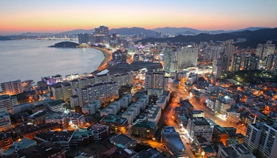
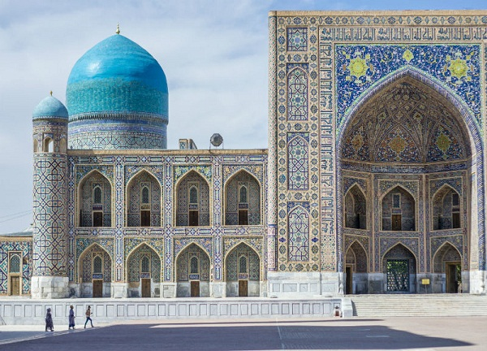
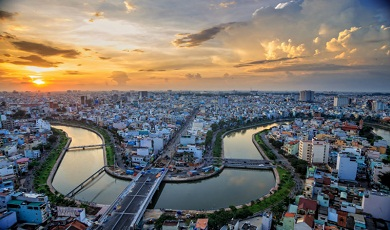
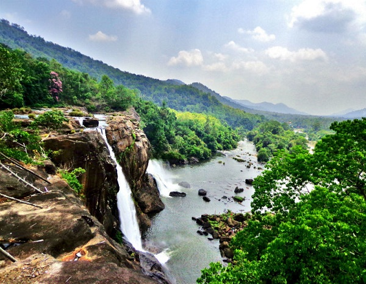

1 – Busan (Coreia do Sul)
“Uma confluência impressionante de paisagens, cultura e comida. Assim é Busan, cidade que condensa um pacote eclético de atividades para agradar qualquer viajante”, diz o guia. A cidade foi nomeada Cidade da Cultura do Leste Asiático em 2018 e estará ainda mais vibrante, com eventos interessantes que expõem a herança cultural do país, de festivais de arte de rua a shows de dança tradicional.
2 – Uzbequistão
Com suas mesquitas cobertas de mosaicos e aura exótica da Rota da Seda, o país deu passos importantes para se abrir para o turismo, anunciando esquemas que dispensavam o visto ou vistos online, novas rotas aéreas e extensões em sua malha ferroviária de alta velocidade, o que tornou o acesso às cidades antigas e arquitetura preciosa mais fácil do que nunca.
3 – Ho Chi Minh (Vietnã)
A metrópole do sul do Vietnã está cada vez mais cool. Os prédios antigos estão dando lugar a brechós, cafés e cervejarias inovadoras. A comida de rua também é uma das atrações da cidade.
4 – Gates Ocidentais (Índia)
Selva, plantações de café, chá, temperos e cachoeiras imponentes são algumas das atrações. Essas montanhas rochosas são listadas pela Unesco com um dos lugares com mais biodiversidade no mundo e abrigam as flores neelakurinji, que florescem apenas uma vez a cada doze anos, e, este ano, pintarão as montanhas de roxo entre agosto e outubro